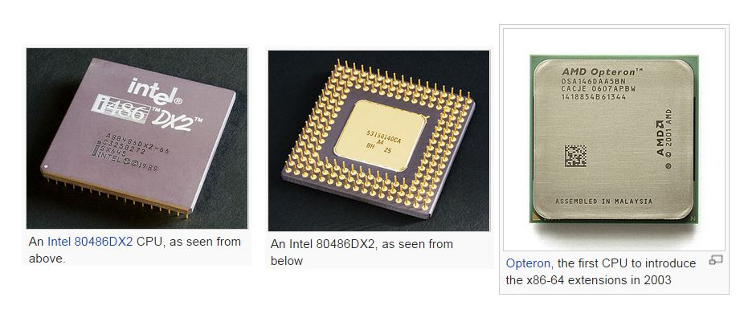
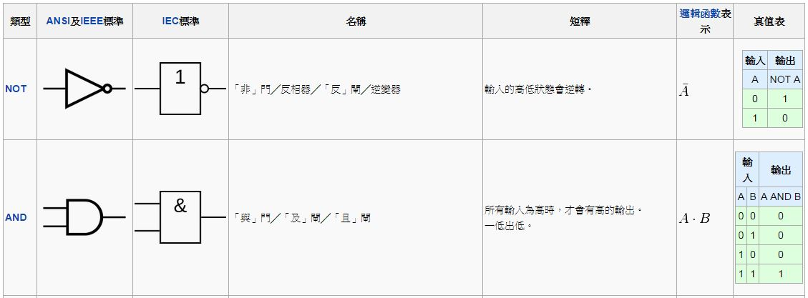
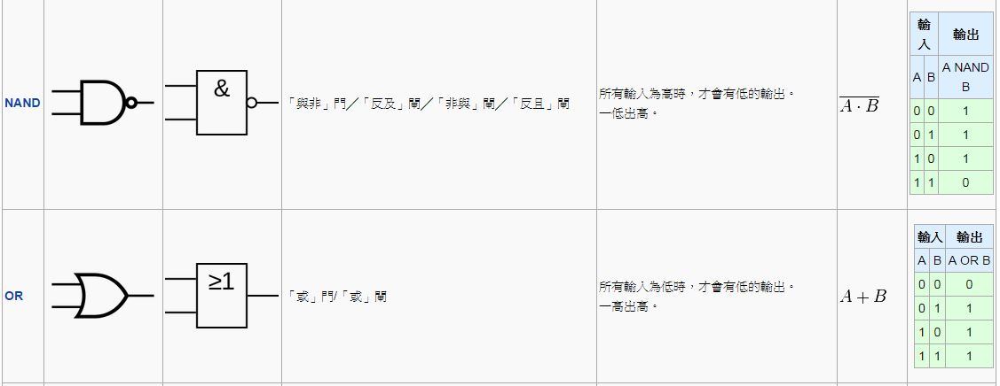
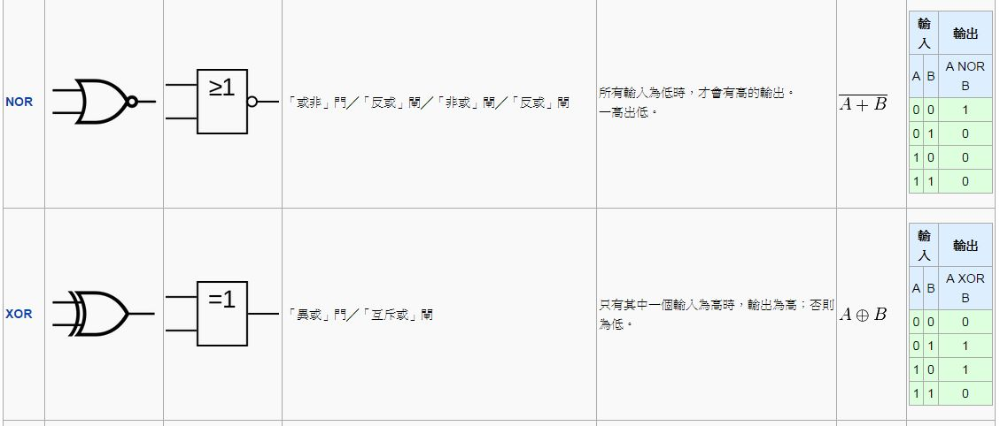
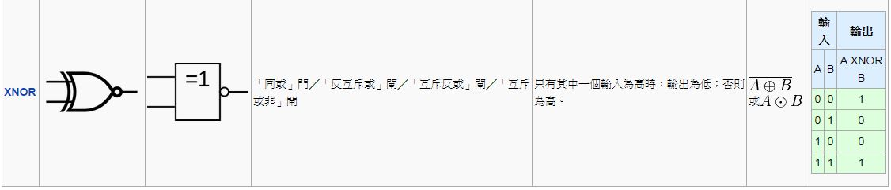

透視電腦的內部結構
電腦看起來很複雜，實際上呢？也真的是很複雜啦！
但是這些複雜的原因，通常是為了要「讓電腦跑得很快」，假如我們重新設計一台電腦，完全不考慮速度問題的話，其實是可以不要那麼複雜的。
在本文中，我們將透過真實的電腦圖片，瞭解電腦的外觀，然後再透過數位電路圖，逐步深入電腦的內部，讓讀者能理解電腦的基本架構。
主機板
如果你將電腦的機殼拆開，會看到一大塊的板子，很多元件都焊接在上面，那塊板子就稱為主機板。

圖、LGA 1366主機板包含南橋和北橋，後來的主機板僅有南橋，北橋已整合到CPU
處理器
然後、你可能會注意到裏面有一塊比較大的方型晶片，那塊通常是「中央處理器」。

處理器內部
當然、由於處理器封裝成一顆「黑黑的 IC 晶片」，所以我們看不到處理器的內部，就算沒封裝起來，我們也看不出這些密密麻麻的線路到底代表甚麼意義。

抽象架構
但是、抽象來看，電腦通常採用下列的「馮紐曼架構」，或者其變形後的「哈佛架構」。

圖、單匯流排的馮紐曼架構
細部元件
而處理器的內部，是由一種稱為「邏輯閘」的基礎元件所組成的，以下是一些常見的基本邏輯閘。
   
其實、只要用 AND (及閘), OR (或閘), NOT (反閘) 就可以組成所有「數位電路」了，其他元件都可以由這三種閘所組成。
甚至、我們只要用一種 NAND (反及閘)，就可以組出所有「數位電路」了，因為 NAND 可以組合出 AND, OR, NOT 閘。
您可以試試看用 NAND 閘來組合出 AND、OR、NOT ，這會是一個很好的練習題。
接下來呢？
當然、要將「中央處理器」分解到「閘」的層次，需要一些「理論與實務工具」，這將會是我們下期所要介紹的主題，我們下期見！
參考文獻
【本文由陳鍾誠取材並修改自 維基百科，採用創作共用的 姓名標示、相同方式分享 授權】